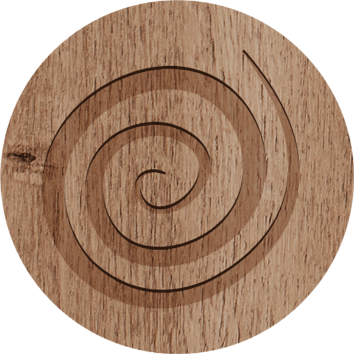
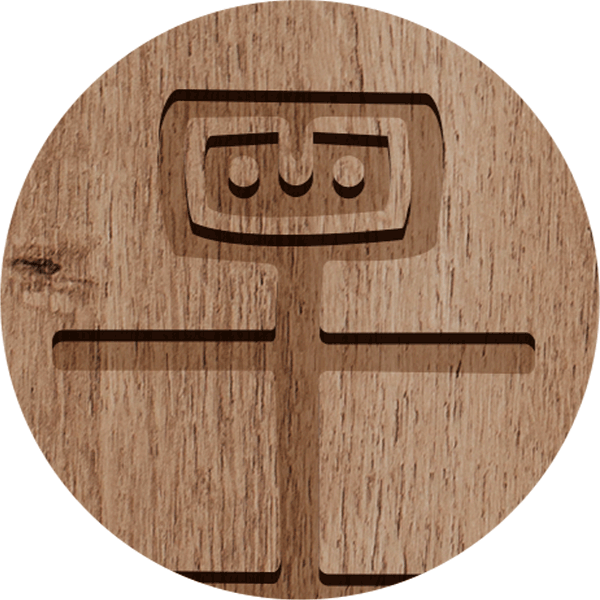

Ron de Venezuela

El Ron de Venezuela es un producto que representa no sólo la calidad
de un suelo, sino el tesón de los hombres del campo que cultivan la
caña de azúcar con la que se elabora la melaza, base de ron, y los
expertos y profesionales que la destilan. El Ron de Venezuela es una
bebida que se toma su tiempo para que el consumidor la disfrute.
La industria ronera venezolana no sólo genera dividendos para la
Nación a través de impuestos y divisas sino que enriquece el
prestigio del país con los múltiples reconocimientos internacionales
otorgados por catadores y conocedores de un licor que ostenta,
además, la Denominación de Origen Controlada Ron de Venezuela.




¿Quiénes somos?
El Fondo de Promoción del Ron de Venezuela FONPRONVEN se creó en el año 2008 con varias finalidades, unas de ellas la de velar por la calidad de los rones producidos en Venezuela y defender la autenticidad de esa bebida a fin de evitar violaciones a la propiedad intelectual a través de copias y adulteraciones.
El Fondo estableció un Consejo Regulador que se encarga de realizar las auditorías a las marcas que poseen la Denominación de Origen Controlada para que todas las casas productoras mantengan la óptima calidad de sus rones.